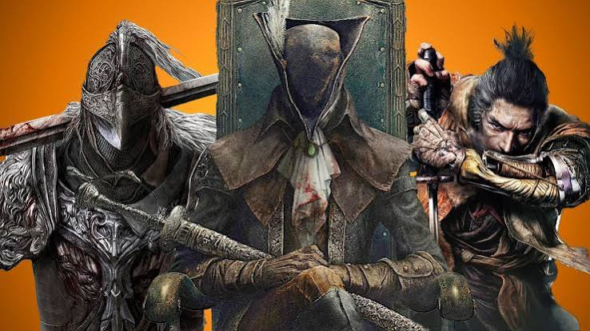
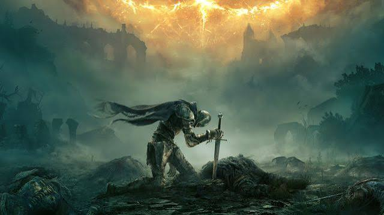
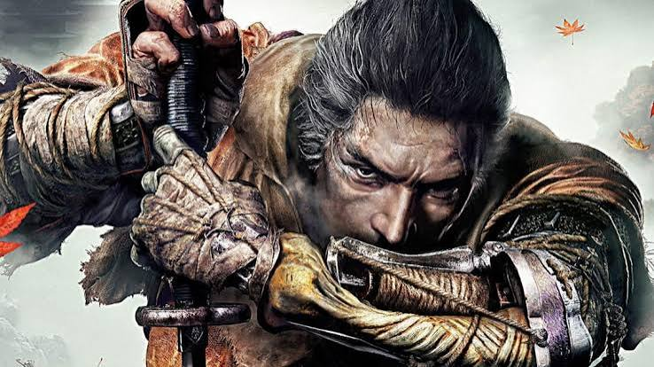

Soulslike

Soulslike (ou Souls-like), estilo Souls, é um subgênero de jogos eletrônicos de RPG de ação conhecidos por possuírem altos níveis de dificuldade e ênfase na narrativa ambiental. Ele teve sua origem na série de jogos Souls da FromSoftware, cujos temas e mecânicas inspiraram diretamente vários outros jogos semelhantes. O rótulo Soulslike recebeu algumas críticas, com vários críticos e desenvolvedores questionando se é um gênero verdadeiro ou uma coleção de mecânicas compartilhadas, e se é muito usado para descrever jogos com apenas vagas semelhanças.
Conceitos

Jogos Soulslike são comumente definidos por seu cenário de fantasia sombria e falta de narrativa aberta, bem como sua profunda construção de mundo, com um cenário cativante sendo citado como chave para despertar o desejo dos jogadores de explorá-lo. Os jogadores devem descobrir pedaços da trama do jogo ao longo do tempo por meio de narrativas ambientais, descrições de itens e diálogos enigmáticos, reunindo-os para aumentar a sensação de mistério do jogo. Apesar de seus temas sombrios, os cenários Soulslike também às vezes apresentam elementos de alívio cômico, como interações inesperadas (ou seja, acariciar um gato), reações humorísticas de personagens não jogáveis (NPCs), roupas e armas peculiares e meios de morte incomuns, muitas vezes pastelão, como ser devorado por um mímico.
Jogabilidade
Jogos Soulslike normalmente possuem um alto nível de dificuldade, onde a morte repetitiva do personagem do jogador é algo normal e esperado, e incorporado como parte da jogabilidade, perdendo todo o progresso se certos checkpoints não forem alcançados. Os jogos Soulslike também costumam ter meios para melhorar permanentemente as habilidades do jogador a fim de poder progredir ainda mais, muitas vezes por um tipo de moeda que pode ser ganha e gasta, mas pode ser perdida ou abandonada entre as mortes se não for gerenciada adequadamente, similarmente às almas da série Souls. Essa mecânica fornece um meio de evitar um estado de falha total, onde o jogador deve reiniciar o jogo completamente e perder todo o progresso, enquanto ainda fornece um sistema de risco e recompensa para tornar o jogo desafiador para o jogador.
A necessidade de repetidas jogadas pode ser vista como um tipo de auto-aperfeiçoamento para o jogador, seja através do aprimoramento gradual de seu personagem, seja melhorando suas próprias habilidades e estratégias dentro do jogo. O combate em jogos Soulslike também pode ser metódico, exigindo que o jogador monitore a resistência para evitar o esforço excessivo de seu personagem, e muitas vezes é baseado em ações de "prioridade de animação" que impedem o jogador de cancelar o movimento até que a animação tenha terminado, deixando-os vulneráveis a ataques inimigos.
História
O gênero Soulslike teve sua gênese no jogo eletrônico de 2009 Demon's Souls, desenvolvido pela FromSoftware e projetado por Hidetaka Miyazaki. Ele introduziu os princípios básicos que seriam seguidos pelos títulos posteriores da série Souls e, por extensão, também pelos Soulslikes. O subgênero foi mais tarde popularizado pelo segundo jogo da franquia Souls, Dark Souls, em 2011.
Jogos considerados Soulslike incluem os títulos da FromSoftware e Miyazaki Bloodborne (2015), Sekiro: Shadows Die Twice (2019), e Elden Ring (2022), além de Lords of the Fallen (2014), Salt and Sanctuary (2016), a série Nioh, a série The Surge, Ashen (2018), Darksiders III (2018), Remnant: From the Ashes (2019), Code Vein (2019), Star Wars Jedi: Fallen Order (2019) e Mortal Shell (2020). Dead Cells (2018) foi oficialmente descrito como um jogo "Souls-lite" ("leve Souls").
Outros jogos fora do gênero citados como tendo sido influenciados pela série Souls incluem The Witcher 2: Assassins of Kings (2011), Destiny (2014), Shovel Knight (2014), Titan Souls (2015), The Witcher 3: Wild Hunt (2015), Assassin's Creed Odyssey (2018) e God of War (2018). Mecânicas de morte semelhantes são usadas em Nier: Automata (2017) e Hollow Knight (2017).
Recepção
Entrevistas com desenvolvedores de jogos Soulslike revelaram que todos pensavam em ser classificados como parte do gênero como algo positivo que funcionava como uma descrição útil para os jogadores. No entanto, alguns acreditavam que poderia ser enganoso, fazendo com que os jogadores esperassem certas coisas e ficassem desapontados quando um jogo não as tivesse. Um exemplo disso foi o desapontamento dos jogadores que Remnant: From the Ashes era principalmente um jogo de tiro, apesar de ser caracterizado como um Soulslike.
Austin Wood, da PC Gamer, criticou o rótulo Soulslike, dizendo que tratar os jogos da série Souls como um modelo "engana" os jogadores a acreditar que vários jogos classificados como tal são semelhantes a Souls quando são realmente diferentes. Ele chamou o rótulo Soulslike, juntamente com os rótulos Metroidvania e roguelike, como um "jargão" que "ignora o que torna [os jogos] únicos". Mark Brown, da Game Maker's Toolkit, também criticou o rótulo Soulslike como excessivamente restritivo, forçando os jogos a se enquadrarem em um determinado modelo e impedindo que seu design evolua. Ao responder a este argumento, Bruno Dias, da Vice, discordou, dizendo que a comparação de Brown sobre os Soulslikes com roguelikes não era adequada porque roguelikes eram uma busca de um passatempo por muito tempo. Ele também disse que os Soulslikes não precisavam evoluir ainda, pois não tinham um problema de comercialização.

https://pt.wikipedia.org/wiki/Soulslike